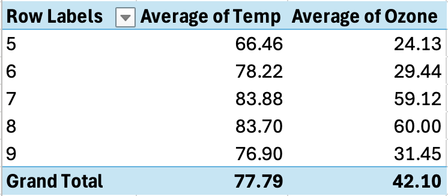

This page contains all of Derrick Baruga’s submissions this semester organized into different sections.
4.1 Wednesday
4.1.1 Week 1
4.1.2 Week 2
I am using the air-quality dataset, which contains air quality measurements collected over several months, specifically from May to September. The dataset includes the following variables: Ozone, Solar.R (solar radiation), Wind (wind speed in miles per hour), Temp (temperature in degrees Fahrenheit), Month (ranging from 5 for May to 9 for September), and Day (ranging from 1 to 31).
Cleaning The Data
I used Excel to clean the data by removing all rows with NA values and performed an exploratory analysis to identify patterns, trends, and potential relationships between these variables over the specified months and days.
Ozone Histogram
The Ozone histogram has its highest values on the left and then curbs off to the right, it indicates a right-skewed distribution.
This means:
Most ozone values are low, with a few much higher values creating a long tail on the right.
The skewness could result from natural variability, pollution events, or weather conditions affecting ozone levels.
Scatter Plot Ozone vs Temperature
A scatter plot of ozone (x-axis) vs. temperature (y-axis) with a slight positive correlation means that higher ozone levels tend to be associated with higher temperatures. However, the relationship is weak, suggesting other factors (like wind, humidity, or pollution) also affect ozone levels and temperature.
Pivot Table Average Ozones Per Day & Month (Redacted)
The pivot table presents daily sums for multiple variables (Temperature, Wind, Solar Radiation, and Ozone) over several months (May to September). The days with the highest ozone averages are Day 25 in May (with an Ozone value of 5-65) and July (with an Ozone value of 7-74), with other notable days being Day 29 and Day 30 in May. The months with the highest ozone levels are May, which shows several days with high averages, and July, particularly on Days 25 and 29.
Pivot Chart Average Ozones Per Day & Month
Pivot Table of Variation in Solar Radiation and Temperature
The pivot chart provide a visual representation of how these variables change over time. The histogram shows day-to-day variations in ozone levels, with the highest concentrations occurring in the summer months. Notably, there is a pronounced peak around July 25th, indicating exceptionally high ozone levels on that day. May and July both have elevated levels, with smaller peaks around May 29th and 30th, but July 25th stands out as the most significant. Overall, the chart confirms that ozone levels are highest in July, particularly around the 25th.
The pivot table shows daily sums for Solar Radiation and Temperature over a month. There is noticeable daily variation, with high values on days like 18, 19, and 29, indicating intense sunlight and warmer temperatures, and lower values on days like 23 and 27, reflecting cooler conditions. The grand totals summarize the entire month, with 20,513 for Solar Radiation and 8,635 for Temperature. Overall, the table captures daily fluctuations in weather conditions.
** Pivot Chart of Pivot Chart of Variation in Solar Radiation and Temperature**
The bar chart shows daily sums of Solar Radiation (blue) and Temperature (orange) over 31 days. High Solar Radiation is notable on days like 9, 13, 16, 18, 19, and 29, with values exceeding 1,000. Temperature values are generally lower, mostly below 400, with higher values on days like 9 and 18. There are significant day-to-day variations, with some days showing high Solar Radiation but lower temperatures (e.g., Day 13). The chart captures daily fluctuations and highlights days with extreme values.
Pivot Table

The pivot table displays the average temperature (Average of Temp) and ozone levels (Average of Ozone) for days labeled 5 to 9, showing average temperatures ranging from 66.46 to 83.88, with the highest temperatures recorded on days 7 and 8. Ozone levels vary significantly, from a low of 24.13 on Day 5 to a high of 60.00 on Day 8. Overall, the average temperature for the period is 77.79, and the average ozone level is 42.10, reflecting moderate temperatures with variable ozone levels across these days and highlighting daily fluctuations in both metrics.
Pivot Chart
The bar chart illustrates the average temperature (in blue) and average ozone levels (in orange) for days 5 to 9, showing that temperatures remain relatively high throughout, ranging from around 66 on Day 5 to approximately 84 on Days 7 and 8. Ozone levels start low on Day 5 (around 24), rise significantly by Days 7 and 8 (around 59-60), and then decrease slightly on Day 9 (around 31). The chart suggests a potential correlation between higher temperatures and elevated ozone levels, as Days 7 and 8, which have the highest temperatures, also show the highest average ozone levels, indicating noticeable variability over the period.
This bar chart shows the average REM sleep time categorized by both conservation status (like “cd,” “en,” “lc”) and dietary habits (carnivore, herbivore, omnivore, etc.).
The distribution indicates variations in REM sleep depending on these factors. For example, certain categories, such as carnivores with an “lc” (least concern) conservation status, seem to have higher average REM sleep.
Stacked Bar Chart of Vore vs. REM Sleep:
This chart displays the breakdown of average REM sleep across different dietary categories and their conservation statuses, further subdivided by animal order.
It provides detailed insights into how sleep patterns differ based on dietary habits and animal groups. For instance, “Carnivora” under different conservation statuses like “lc” and “domesticated” shows varying REM sleep levels.
Packed Bubble Chart of Order:
The chart uses bubbles to represent different orders of animals, with the size of each bubble possibly corresponding to the number of species or the average REM sleep within that order.
Colors differentiate various dietary habits (“vore”), showing how different animal orders fall into categories such as carnivores, herbivores, omnivores, etc.
Treemap of Order:
This chart breaks down the animal orders into smaller rectangles, where the size of each rectangle may indicate the average REM sleep, the number of species, or another quantitative measure.
The colors correspond to different orders, offering a visual overview of how these orders compare in the measured metric.
4.2 Friday - Midterm Projects
4.2.1 Week 1
4.2.2 Week 2
title: “Midterm_Project_Baruga” subtitle: “Data.gov: Warehouse and Retail Sales” format: html —
The Warehouse and Retail Sales dataset provides a comprehensive view of sales activities in Montgomery County, Maryland, by capturing data from various warehouse and retail operations. This dataset was collected through a combination of direct reporting from businesses, automated sales tracking systems, and regional sales surveys. The data encompasses a range of sales metrics, including volume and product categories, to offer insights into business performance across different types of establishments.
The dataset includes the following variables:
Row Labels: Categories or identifiers used to organize and classify the sales data.
BEER: Sales volume for beer products.
DUNNAGE: Sales volume for dunnage products, which are materials used to protect goods during transportation.
KEGS: Sales volume for kegs, typically used for storing and transporting beverages.
LIQUOR: Sales volume for liquor products.
NON-ALCOHOL: Sales volume for non-alcoholic beverages.
REF: Sales volume for refrigeration supplies or products.
STR_SUPPLIES: Sales volume for store supplies, which may include various retail essentials.
WINE: Sales volume for wine products.
Grand Total: The total sales volume across all categories combined.
** Data Cleaning and Preparation**
Import the Data: I downloaded and loaded the CSV file into Excel.
Check for Missing Values: My preferred method for handling NAs is by highlighting them and deselecting them using the filter tool for each column as I feel most thorough by doing that. Using the following steps “Select the entire dataset, go to Home > Conditional Formatting > Highlight Cells Rules > Blanks to highlight all blank cells.”
Data Formatting: Formated any columns that need specific data types (such as dates as date format, numbers as currency or percentage).
Specifically I used the =TEXTJOIN(“-”, TRUE, A2, B2) function to join column one (YYYY) and column two (MM) into a new column called TIME
Pivot tables are a powerful and user friendly (drag and drop) summary statistic/visualisation tool that I used to get an intial feel of my data.
Here are the findings:
Warehouse Sales/Expenses of Beverages Over Time (2017 - 2020)
Overall Sales: BEER has the highest sales, followed by WINE, while DUNNAGE, REF, and STR_SUPPLIES have negative or minimal sales, which makes sense as refers to materials used to protect goods during shipping and handling, such as packing materials or cushioning, and as such is an expense to the business leading to its negative output on revenue.
Monthly Trends: BEER sales vary significantly, with large peaks and drops. WINE sales are more stable but still show some fluctuation. KEGS and LIQUOR show positive but lower sales.
Histogram of Warehouse Sales/Expenses of Beverages Over Time
Here is a histogram representation of the aforementioned summary pivot tables. There appears to be a disporportionate amount of BEER bought for warehouses. But that could be due to the fact that beers are sold in packs and so single unit quantity has skyrocketed in order to make a “12 pack” that will later count as one unit sold at retail.
Retail Sales of Beverages Over Time (2017 - 2020)
Product Types: Includes Beer, Liquor, Wine, Non-Alcoholic beverages, and others, with substantial sales figures for Beer, Liquor, and Wine.
Sales Trends: Liquor leads with $802,691.43 in total sales, followed by Wine ($746,498.59) and Beer ($574,220.53). Recent months show higher sales for Beer and Wine.
Low Sales Categories: Items like Dunnage and Kegs have negligible or zero sales.
Overall Total: Total sales across all products amount to $2,160,899.37, highlighting overall retail activity.
Histogram of Retail Sales of Beverages Over Time
Once we come to the retail side of things we see that WINE and LIQUOR are clear best sellers. It is shown hower that LIQUOR has begun to overtake WINE in retail sales.
Summary
From the “Warehouse and Retail Sales” dataset, I found that Beer leads in warehouse sales, with notable fluctuations due to bulk packaging, while Wine and Liquor have more stable sales. Retail sales show Liquor as the top seller, recently surpassing Wine, with Beer also performing strongly but declining. The histograms illustrate high Beer volume in warehouses and a shift in retail dominance from Wine to Liquor. Next, I will analyze seasonal trends, create advanced visualizations for deeper insights, and finalize the report with comprehensive findings and recommendations. ### Week 2 ### Week 3
This stacked bar chart displays the average retail sales from June 2017 to September 2020, broken down by different item types such as “BEER,” “WINE,” “LIQUOR,” “NON-ALCOHOL,” and others.
The chart shows monthly fluctuations in sales, with noticeable peaks around December 2017 and July 2020. This suggests seasonal effects or particular periods of high demand for certain items.
The different colors represent various item types, indicating the contribution of each category to the total sales in each month. For example, “LIQUOR” and “NON-ALCOHOL” seem to contribute significantly to the total sales during peak months.
2. Area Chart: Avg Sales vs. Transfers:
This plot consists of two layered area charts: the top one shows average retail transfers, and the bottom one shows average retail sales over the same period (June 2017 to September 2020).
Both charts use colors to represent different item types, revealing how each type contributes to overall sales and transfers.
The charts indicate that the trends in transfers often align with the sales trends, which suggests a correlation between the quantity of goods transferred and the sales performance.
Peaks and troughs in the charts could indicate seasonal variations, inventory management strategies, or market demand shifts for various items.
3. Packed Bubble Chart of Avg Sales Over Time:
This chart visualizes average sales using bubbles, where the size of each bubble reflects the volume of sales, and the color represents different item types.
Larger bubbles correspond to higher sales, indicating which item types have the greatest impact on sales over time.
The variety of bubble sizes and colors reveals the diversity in item types and their varying sales performance.
4. Treemap of Retail Transfers vs. Retail Sales:
The treemap displays retail sales data, with each rectangle representing different categories (“NON-ALCOHOL,” “BEER,” “LIQUOR,” “REF,” etc.) and specific years (2017, 2019, 2020).
The size of each rectangle corresponds to the magnitude of sales, and the color shading indicates the average retail sales, with darker shades representing higher sales.
This visualization shows how different item types and their sales vary in significance. For example, “NON-ALCOHOL” items appear to have a prominent share, especially in 2020.
4.2.4 Week 8
This contains Derrick Week 8 Submissions
I chose the dataset “Federal, State, and Local Government Transportation-Related Revenues and Expenditures, Fiscal Year” provides financial data on transportation-related revenues and expenditures across federal, state, and local governments in the United States, measured in millions of current dollars. It includes detailed information on government revenues from user charges and taxes specifically allocated for transportation programs, as well as expenditures in this sector over multiple fiscal years. The dataset excludes general fund revenues and borrowing proceeds, focusing on own-source revenues.
The data is sourced from the U.S. Department of Transportation’s Bureau of Transportation Statistics (BTS) and is published under the National Transportation Statistics Table 3-29, available on the BTS website. This dataset is instrumental for analyzing transportation funding and government spending trends at various governmental levels.
Dataset Exploration
# Load necessary librarieslibrary(readxl) # To read Excel fileslibrary(dplyr) # For data manipulation
Attaching package: 'dplyr'
The following objects are masked from 'package:stats':
filter, lag
The following objects are masked from 'package:base':
intersect, setdiff, setequal, union
library(ggplot2) # For visualization
Warning: package 'ggplot2' was built under R version 4.3.2
# Task 2: Data Cleaning# Remove duplicates (if any)dataset <- dataset %>%distinct()# Handle missing values (remove rows with missing values or impute with mean/median if necessary)# Option 1: Remove rows with missing valuescleaned_dataset <-na.omit(dataset)# Option 2: Impute missing values with median (can also use mean if more appropriate)cleaned_dataset <- dataset %>%mutate(across(where(is.numeric), ~ifelse(is.na(.), median(., na.rm =TRUE), .)))# Check for inconsistencies or outliers using boxplots (visual inspection)boxplot(cleaned_dataset[, sapply(cleaned_dataset, is.numeric)], main ="Boxplots for Numeric Variables")
# Remove rows where the Description column is NAcleaned_dataset <- dataset %>%filter(!is.na(Description))# Convert year columns to numericcleaned_dataset[, -1] <-lapply(cleaned_dataset[, -1], as.numeric)# Check if the conversion was successfulstr(cleaned_dataset)
tibble [14 × 16] (S3: tbl_df/tbl/data.frame)
$ Description: chr [1:14] "Total government revenues" "Federal" "State and local" "Total government expenditures" ...
$ 2007 : num [1:14] 163884 53967 109917 268843 243373 ...
$ 2008 : num [1:14] 163222 52102 111120 284343 256501 ...
$ 2009 : num [1:14] 157684 47287 110397 300267 270478 ...
$ 2010 : num [1:14] 160472 47244 113227 303516 271470 ...
$ 2011 : num [1:14] 171324 50310 121014 303784 270602 ...
$ 2012 : num [1:14] 179173 54473 124699 314024 281248 ...
$ 2013 : num [1:14] 174527 50686 123841 309276 277065 ...
$ 2014 : num [1:14] 183537 54161 129376 324000 291241 ...
$ 2015 : num [1:14] 194195 56714 137481 329551 297255 ...
$ 2016 : num [1:14] 194420 57279 137141 339439 304305 ...
$ 2017 : num [1:14] 203528 57628 145900 355374 318231 ...
$ 2018 : num [1:14] 213373 60035 153338 370884 337150 ...
$ 2019 : num [1:14] 228293 62142 166150 384211 349118 ...
$ 2020 : num [1:14] 200560 53719 146842 404177 362396 ...
$ 2021 : num [1:14] 196163 53503 142660 398764 358148 ...
# Plot the distribution for one of the years, e.g., 2021hist(cleaned_dataset$`2021`, main ="Distribution of Transportation-Related Revenues/Expenditures for 2021", xlab ="Revenue/Expenditure (Millions)", breaks =20)
# Example: Create a correlation matrix to identify relationships between variablescor_matrix <-cor(cleaned_dataset %>%select(where(is.numeric)), use ="complete.obs")print(cor_matrix)
# Importing Numpy with nickname npimport numpy as npnp.absolute(-1)arr = np.array([1, 2, 3, 4, 5])print(arr)
[1 2 3 4 5]
# Lists are native to pythonmy_list = [1, 2, 3, 4, 5]print(my_list)
[1, 2, 3, 4, 5]
# Dataframes, so we need pandas libraryimport pandas as pddata = {'Ozone': [41, 36, 12], 'Temp': [67, 72, 74]}df = pd.DataFrame(data)print(df)
Ozone Temp
0 41 67
1 36 72
2 12 74
4. Loading csv files
To load .csv files into a ‘DataFrame’, we use pandas function read_csv
df = pd.read_csv('/Users/derrickmarkbavaudbaruga/Documents/fall 2024/CSC 477/Week 2/airquality_datasets.csv')# Summary of the datasetprint(df.info())print(df.describe())
import matplotlib.pyplot as plt# Ozone Histogramplt.figure(figsize=(8, 6))plt.hist(df['Ozone'].dropna(), bins=20, color='blue', edgecolor='black')plt.title('Distribution of Ozone Levels')plt.xlabel('Ozone (ppb)')plt.ylabel('Frequency')plt.show()
png
# Temp Histogramplt.figure(figsize=(8, 6))plt.hist(df['Temp'].dropna(), bins=20, color='orange', edgecolor='black')plt.title('Distribution of Temperature')plt.xlabel('Temperature (°F)')plt.ylabel('Frequency')plt.show()
png
# Boxplot for Ozoneplt.figure(figsize=(8, 6))plt.boxplot(df['Ozone'].dropna())plt.title('Boxplot of Ozone Levels')plt.ylabel('Ozone (ppb)')plt.show()
png
# Boxplot for Tempplt.figure(figsize=(8, 6))plt.boxplot(df['Temp'].dropna())plt.title('Boxplot of Temperature')plt.ylabel('Temperature (°F)')plt.show()
png
4.3.2 Week 5
1. Introduction to Plotnine
plotnine is a data visualization package for Python based on the Grammar of Graphics, which is a system for understanding and building plots. The grammar describes how plots are constructed by combining data, aesthetic mappings, geometric objects, and other components.
To begin, you’ll need to install the plotnine package if you don’t have it installed:
# !pip install plotnine
2. The Grammar of Graphics
The Grammar of Graphics consists of the following key components:
Data: The data you want to visualize.
Aesthetics (aes): How the data is mapped to visual properties, such as x and y coordinates, color, size, etc.
Geometries (geom): The type of plot, like points, lines, bars, etc.
Facets: Subplots based on the data.
Scales: Control the mapping from data to aesthetic properties.
Coordinate systems: Adjust how data is projected on the plane (Cartesian, rotations, polar, etc.).
Themes: Adjust the non-data elements like background, labels, gridlines, etc.
3. Creating Your First Plot Let’s begin by creating a simple scatter plot using the famous mtcars dataset. We’ll show how to set up the basic structure and gradually build complexity.
# Import required librariesimport pandas as pdfrom plotnine import ggplot, aes, geom_point, labs# Load the mtcars datasetmtcars = pd.read_csv('https://raw.githubusercontent.com/selva86/datasets/master/mtcars.csv')# Create a basic scatter plot(ggplot(mtcars, aes(x='wt', y='mpg')) + geom_point() + labs(title='Scatter Plot of MPG vs Weight', x='Weight (1000 lbs)', y='Miles per Gallon'))
<string>:3: FutureWarning: Using repr(plot) to draw and show the plot figure is deprecated and will be removed in a future version. Use plot.show().
<Figure Size: (640 x 480)>
** 4. Adding Aesthetic Mappings**
In the Grammar of Graphics, aesthetics control how data points are represented visually. You can map variables to size, color, shape, and more.
Example: Color by cyl (number of cylinders)
(ggplot(mtcars, aes(x='wt', y='mpg', color='factor(cyl)')) + geom_point() + labs(title='MPG vs Weight by Cylinder', x='Weight (1000 lbs)', y='Miles per Gallon', color='Cylinders'))
<string>:1: FutureWarning: Using repr(plot) to draw and show the plot figure is deprecated and will be removed in a future version. Use plot.show().
<Figure Size: (640 x 480)>
Example: Size by horsepower (hp)
(ggplot(mtcars, aes(x='wt', y='mpg', color='factor(cyl)', size='hp')) + geom_point() + labs(title='MPG vs Weight by Cylinder and Horsepower', x='Weight (1000 lbs)', y='Miles per Gallon', color='Cylinders', size='Horsepower'))
<string>:1: FutureWarning: Using repr(plot) to draw and show the plot figure is deprecated and will be removed in a future version. Use plot.show().
<Figure Size: (640 x 480)>
5. Geometric Objects
geom_* specifies the type of plot. You can create scatter plots, line charts, bar plots, histograms, etc.
Example: Adding a smooth line (geom_smooth)
from plotnine import geom_smooth(ggplot(mtcars, aes(x='wt', y='mpg')) + geom_point() + geom_smooth(method='lm') +# Linear regression line labs(title='MPG vs Weight with Regression Line', x='Weight (1000 lbs)', y='Miles per Gallon'))
<string>:2: FutureWarning: Using repr(plot) to draw and show the plot figure is deprecated and will be removed in a future version. Use plot.show().
<Figure Size: (640 x 480)>
6. Faceting
Faceting allows you to split your plot into multiple panels based on a factor.
Example: Facet by cyl
from plotnine import facet_wrap(ggplot(mtcars, aes(x='wt', y='mpg')) + geom_point() + facet_wrap('~cyl') +# Split into subplots by cylinders labs(title='MPG vs Weight Faceted by Cylinder', x='Weight (1000 lbs)', y='Miles per Gallon'))
<string>:2: FutureWarning: Using repr(plot) to draw and show the plot figure is deprecated and will be removed in a future version. Use plot.show().
<Figure Size: (640 x 480)>
7. Customizing Scales
Scales control the mapping from data to aesthetic attributes. You can customize scales for color, size, and more.
Example: Custom Color Scale
from plotnine import scale_color_manual(ggplot(mtcars, aes(x='wt', y='mpg', color='factor(cyl)')) + geom_point() + scale_color_manual(values=['#1f77b4', '#ff7f0e', '#2ca02c']) +# Custom colors labs(title='MPG vs Weight with Custom Colors', x='Weight (1000 lbs)', y='Miles per Gallon', color='Cylinders'))
<string>:2: FutureWarning: Using repr(plot) to draw and show the plot figure is deprecated and will be removed in a future version. Use plot.show().
<Figure Size: (640 x 480)>
8. Flip Coordinates Create a bar plot showing distribution of cylinders
Example: Fliping coordinates axis
import pandas as pdfrom plotnine import ggplot, aes, geom_bar, coord_flip, labs# Load the mtcars datasetmtcars = pd.read_csv('https://raw.githubusercontent.com/selva86/datasets/master/mtcars.csv')# Create a bar plot showing distribution of cylinders(ggplot(mtcars, aes(x='factor(cyl)', fill='factor(cyl)')) + geom_bar(width=1) + coord_flip() +# Flip coordinates as a simple workaround labs(title='Distribution of Cylinders', x='Cylinders', fill='Cylinders'))
<string>:3: FutureWarning: Using repr(plot) to draw and show the plot figure is deprecated and will be removed in a future version. Use plot.show().
<Figure Size: (640 x 480)>
9. Themes
Themes allow you to adjust the non-data aspects of the plot, such as background, axis labels, and gridlines.
Example: Apply a Minimal Theme
from plotnine import theme_minimal(ggplot(mtcars, aes(x='wt', y='mpg')) + geom_point() + theme_minimal() +# Minimalistic theme labs(title='MPG vs Weight with Minimal Theme', x='Weight (1000 lbs)', y='Miles per Gallon'))
<string>:2: FutureWarning: Using repr(plot) to draw and show the plot figure is deprecated and will be removed in a future version. Use plot.show().
<Figure Size: (640 x 480)>
10. Saving the Plot
You can save your plot using the save method.
Example: Save the plot
# Save the plot to a filep = (ggplot(mtcars, aes(x='wt', y='mpg')) + geom_point() + labs(title='MPG vs Weight', x='Weight (1000 lbs)', y='Miles per Gallon'))p.save("mpg_vs_weight.png")
C:\Users\toluf\AppData\Roaming\Python\Python312\site-packages\plotnine\ggplot.py:606: PlotnineWarning: Saving 6.4 x 4.8 in image.
C:\Users\toluf\AppData\Roaming\Python\Python312\site-packages\plotnine\ggplot.py:607: PlotnineWarning: Filename: mpg_vs_weight.png
Week 5 Midterm Report
Data Analysis
Load libraries
import torch as tchimport pandas as pdimport scipy as sciimport openpyxl as opxlimport seaborn as sns
Load CSV
df = pd.read_csv('data.csv', low_memory=False)
Summary Stats
df.head()
SCRMCTRL
PPCSWGT
SEQNUM
SEX
AGE
INTTYPE
NONINT
HISP
MODE
PSSTRATA
…
V352A
V352B
V352C
V352D
V352E
V352F
CHECK_ITEM_J
CHECK_ITEM_K
CHECK_ITEM_L
V353
0
2.030020e+18
4150.904836
1.0
Male
45-64
PPCS Interview - Telephone
NaN
White Only
Computer-assisted personal interviewing
54
…
NaN
NaN
NaN
NaN
NaN
NaN
NaN
NaN
NaN
NaN
1
2.030030e+18
1601.829088
2.0
Female
25-44
PPCS Interview - Telephone
NaN
White Only
Computer-assisted personal interviewing
8
…
NaN
NaN
NaN
NaN
NaN
NaN
NaN
NaN
NaN
NaN
2
2.030030e+18
0.000000
3.0
Male
16-17
PPCS Noninterview
NCVS Interview Completed by Proxy
Black Only
Computer-assisted personal interviewing
8
…
NaN
NaN
NaN
NaN
NaN
NaN
NaN
NaN
NaN
NaN
3
2.030030e+18
0.000000
4.0
Male
25-44
PPCS Noninterview
NCVS Interview Completed by Proxy
White Only
Computer-assisted personal interviewing
8
…
NaN
NaN
NaN
NaN
NaN
NaN
NaN
NaN
NaN
NaN
4
2.030030e+18
1672.290183
5.0
Male
25-44
PPCS Interview - Telephone
NaN
Black Only
Computer-assisted personal interviewing
37
…
NaN
NaN
NaN
NaN
NaN
NaN
NaN
NaN
NaN
NaN
5 rows × 266 columns
TRace (HISP) and CHECK_ITEM_L
CHECK_ITEM_L is the survey question asked to participants on whether or not they have been arrested before
import matplotlib.pyplot as pltdf = pd.read_csv('data.csv', low_memory=False)# Mapping CHECK_ITEM_LCHECK_ITEM_L_mapping = {'(1) Yes': 1,'(2) 2': 2,'(9) Out of universe': 9}df['CHECK_ITEM_L'] = df['CHECK_ITEM_L'].astype(str).map(CHECK_ITEM_L_mapping)df['CHECK_ITEM_L'] = pd.to_numeric(df['CHECK_ITEM_L'], errors='coerce')# Mapping HISPrace_mapping = {'(1) White Only': 1,'(2) Black Only': 2,'(3) Hispanic': 3,'(4) Asian Only': 4,'(5) Other': 5}df['HISP'] = df['HISP'].astype(str).map(race_mapping)df['HISP'] = pd.to_numeric(df['HISP'], errors='coerce')# Drop NaN values for the plotdf_filtered = df.dropna(subset=['CHECK_ITEM_L', 'HISP'])# Create a count plotplt.figure(figsize=(12, 6))sns.countplot(data=df_filtered, x='HISP', hue='CHECK_ITEM_L', palette='viridis')# Add titles and labelsplt.title('Count of CHECK_ITEM_L by HISP', fontsize=16)plt.xlabel('HISP', fontsize=14)plt.ylabel('Count', fontsize=14)plt.xticks(ticks=range(len(race_mapping)), labels=race_mapping.keys(), rotation=45)# Add the legend explicitly with unique labelsunique_labels = df_filtered['CHECK_ITEM_L'].dropna().unique()label_names = {1: 'Yes', 2: '2', 9: 'Out of universe'}plt.legend(title='CHECK_ITEM_L', labels=[label_names.get(label, str(label)) for label in unique_labels])plt.grid(axis='y')plt.show()
png
This plot, generated from the 2018 Police-Public Contact Survey, displays the count of interactions where respondents answered “Yes” to a specific question (CHECK_ITEM_L), categorized by race (HISP). The survey investigates civilian experiences with law enforcement. The highest count is observed among White individuals, which is consistent with their larger representation in the dataset. In contrast, racial groups such as Asians and others have significantly fewer “Yes” responses. This chart highlights racial differences in certain law enforcement-related interactions, suggesting possible disparities in how different groups experience or report these encounters.
4.4 Race arrests by SEX with SCRMCTRL as Count Variable
df = pd.read_csv('data.csv', low_memory=False)# Mapping CHECK_ITEM_LCHECK_ITEM_L_mapping = {'(1) Yes': 1,'(2) 2': 2,'(9) Out of universe': 9}df['CHECK_ITEM_L'] = df['CHECK_ITEM_L'].astype(str).map(CHECK_ITEM_L_mapping)df['CHECK_ITEM_L'] = pd.to_numeric(df['CHECK_ITEM_L'], errors='coerce')# Mapping HISPrace_mapping = {'(1) White Only': 1,'(2) Black Only': 2,'(3) Hispanic': 3,'(4) Asian Only': 4,'(5) Other': 5}df['HISP'] = df['HISP'].astype(str).map(race_mapping)df['HISP'] = pd.to_numeric(df['HISP'], errors='coerce')# SEX Mappingsex_mapping = {'(1) Male': 1, # Male'(2) Female': 2, # Female}df['SEX'] = df['SEX'].astype(str).map(sex_mapping)df['SEX'] = pd.to_numeric(df['SEX'], errors='coerce')# Drop NaN values for the plotdf_filtered = df.dropna(subset=['CHECK_ITEM_L', 'HISP', 'SEX', 'SCRMCTRL'])# Create a count plot with SCRMCTRL as the count variableplt.figure(figsize=(12, 6))# Count the occurrences of SCRMCTRL and use it to plotsns.countplot(data=df_filtered, x='HISP', hue='SEX', palette='viridis', dodge=True)# Add titles and labelsplt.title('Count of Race arrests by SEX with SCRMCTRL as Count Variable', fontsize=16)plt.xlabel('HISP', fontsize=14)plt.ylabel('Count of SCRMCTRL', fontsize=14)plt.xticks(ticks=range(len(race_mapping)), labels=race_mapping.keys(), rotation=45)# Add the legend explicitly with unique labels for SEXplt.legend(title='SEX', labels=['Male', 'Female'])plt.grid(axis='y')# Save the plot as a PNG fileplt.savefig('arrests_histogram_baruga.png', format='png', dpi=300, bbox_inches='tight')# Show the plotplt.show()
png
This plot, based on the 2018 Police-Public Contact Survey dataset, shows the count of arrests (SCRMCTRL) across different racial categories (HISP), segmented by gender (SEX). The survey, conducted by the U.S. Bureau of Justice Statistics, examines public interactions with law enforcement, such as police stops and arrests. The higher arrest count for White males can be attributed to the fact that White individuals make up the largest racial group in the dataset. The data reveals notable racial and gender disparities in arrests, with arrest counts for females across all racial categories being lower than for males.